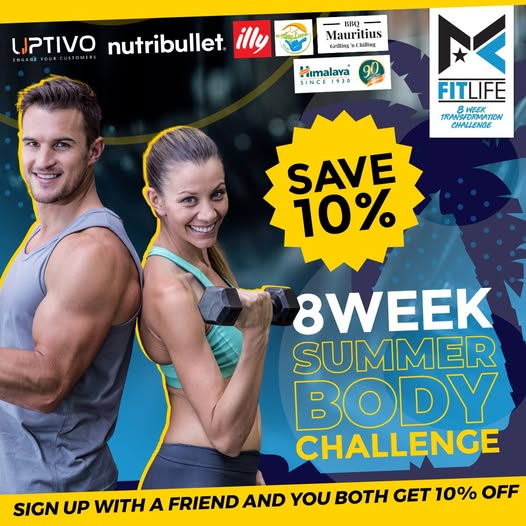
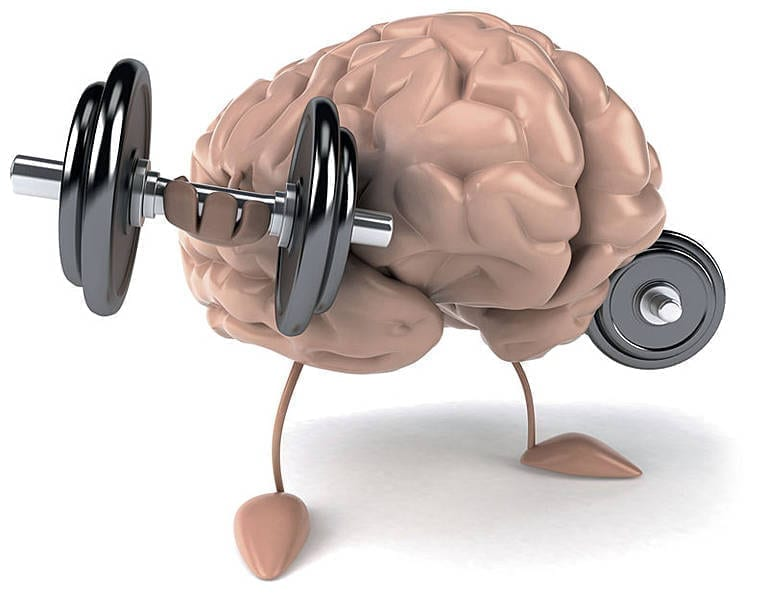

The annual Pre-Summer Gym Rush is real. There are many reasons
as to why:
1.The Summer Body phenomenon

An 8-week Summer Body advertisement.
Many associate summer with swimsuits, beach trips and showing more skin
this creates a strong motivational spike.
People want to look good for summer.
2.Social Media Influence
Fitness Influencer Ashton Hall.
Of course the socials are full of 'fitspiration' around this time of year,
with many marketing strategies pushing diet plans, fitness apparel and workout programs.
Seeing your favourite influencer talk or post about working out,
triggers FOMO (fear of missing out) swaying many to join.
3.Psychology

Psychological Workout.
Spring represents change, renewal and growth,
many folk feel motivated to start new positive habits.
Summer in South Africa at least, is at the end of the year,
the mental deadline of achieving your goals before the end pushes many to the gym.
Canadian bodybuilder Christian Bumstead winning Mr. Olympia 2022
To go from a stick man to 6-time Mr Olympia Christian Bumstead is similar to
hearing 'python' and thinking of the snake to Python in advanced machine-learning processes in autonomous vehicles for Object Detection and Lane Tracking.
To get to that level of skill takes years of consistency and dedication. I like to think of trying a new exercise similar to learning
a new programming concept. Learning OOP (Object-Oriented Programming) is a lot like bench pressing, it feels heavy and tough at first,
but once you focus on technique, it becomes much easier and very satisfying.
Python: Object-Oriented Programming
Programming resembles the gym in many ways. At first everything feels heavy, sometimes confusing - even
lifting the small weights or simple concepts are challenging.
But with consistent practice the weights become lighter and easier enabling the handling of more complex projects.
Ultimately the learning curve can be quite steep but with perseverance the rewards are long lasting.


2.Social Media Influence
with many marketing strategies pushing diet plans, fitness apparel and workout programs.
triggers FOMO (fear of missing out) swaying many to join.